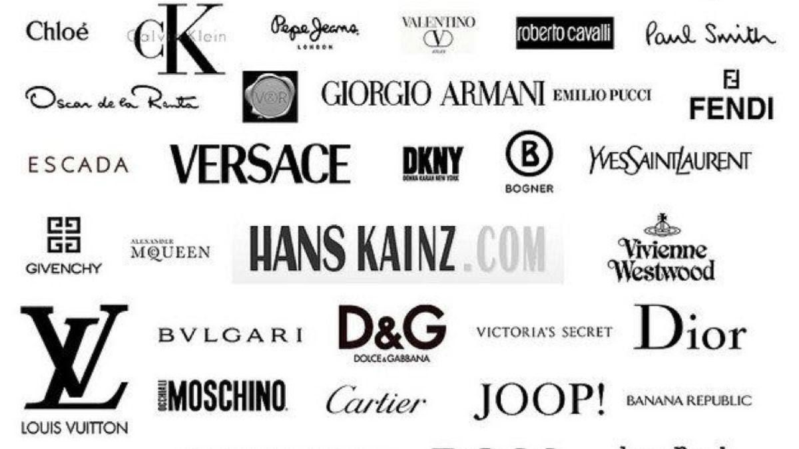

The business of Luxury is about status and storytelling


Storytelling is at the heart of today’s world of connected people wherein communication is easy and wherein a message can travel from person to person a make a world roundtrip in less than a minute.
Status is what drives people's everyday decisions. The question we ask ourselves is always how this will affect my status which is the story I am telling myself right now and the one I am eager to live in reality. If your brand storytelling resonates with people and fits the story they are telling themselves right now and holds core elements that could potentially help them live the story they want to live, be sure that they will engage with your brand messages.
Luxury is the field that most leverage status and storytelling is very crucial for a brand or a company acting in this industry. Almost every actor of the luxury business has a story that she or he would live and is eager to hear. Discovering these pieces of stories is the first task of a luxury brand creator or marketer.
Narrowing the size of the audience that your brand reach can help you create a better story that each of them will share because sharing it will just increase their status. Who would hide an expensive Louis Vuitton’s bag or the smell of an expensive Victoria’s Secret perfume (you cannot)? That’s the core specificity of the luxury industry, products and services of this industry are spreadable, there the customers are the first and most important marketing task force. These customers are those who will spread the message because telling and showing this expensive product or service they have bought make them feel IN
Targeting rich persons only could be seen as an easy way for an entrepreneur to succeed but this is the most difficult journey because rich persons almost never buy because they need but because they want and it is very very often difficult to please them but the reward is worth the risk and effort.
I was never interested in Luxury products and services but when you are engaged in an entrepreneurial journey, you should know that it is not about you and your taste but the ones of those you are eager to reach with the solution, product, and service that your startup or company sells.
Years of learning marketing helped me understand the role and importance of status and storytelling for branding products and services and the luxury industry couldn’t be out of the scope of this learning journey. Experiencing some interesting ideas about luxury services and products with a story-driven strategy that could help luxury brands and actors increase their status.
Marketing is about status and storytelling.
What story does your company or startup tell?
Further Reading: Blank & Dorf, Purple Cow, Crossing the Chasm, Story-Driven, This is Marketing